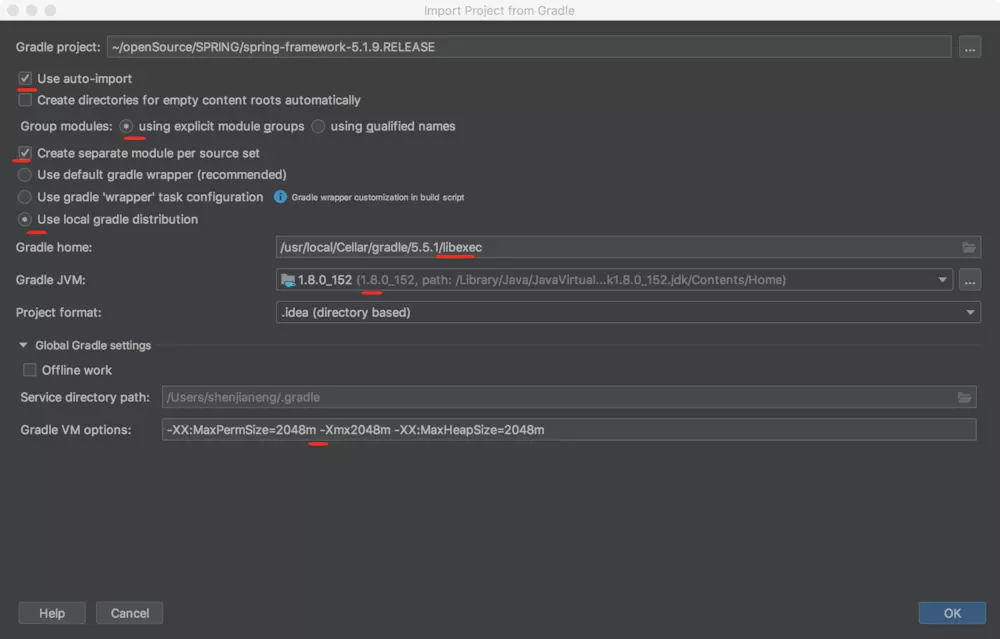

原文出处:本文由博客园博主Coder小黑提供。
原文连接:https://www.cnblogs.com/coderxiaohei/p/11628378.html
原文连接:https://www.cnblogs.com/coderxiaohei/p/11628378.html
构建环境
- macOS 10.13.6
- JDK1.8
- IntelliJ IDEA 2018.3.6 (Ultimate Edition)
- Spring v5.1.9.RELEASE
- Gradle 5.5.1。直接使用brew安装Gradle
brew install gradle
源码构建
1.源码导入

2.阅读Spring源码下的 import-into-idea.md 文件可知
Precompile
spring-oxmwith./gradlew :spring-oxm:compileTestJava
3.修改 gradle/docs.gradle 脚本
一开始尝试直接构建Spring源码，在构建的过程中会报错，通过修改docs.gradle 脚本，注释 dokka 和 asciidoctor
4.源码构建
等了好长好长的时间，终于构建完成了。
5.在Spring项目中新增一个自己的module，尝试运行hello world，引入spring-context 依赖 compile(project(":spring-context"))

6.运行main方法，发现报错
Error:(160, 32) java: 找不到符号 符号: 变量InstrumentationSavingAgent 位置:
网上搜索了一大堆的解决方法，发现都不行。后来看了spring-context的依赖发现，spring-instrument 在 spring-context 中为 optional 依赖(optional(project(":spring-instrument")) )，于是在自己的模块中添加spring-instrument依赖
再次运行main方法，程序运行成功。
ps：令我感到奇怪的是，当我在写这篇总结时，尝试通过移除spring-instrument依赖来复现上述的问题时，发现复现不了了，好神奇。